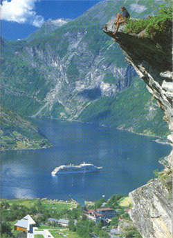
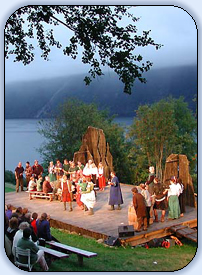
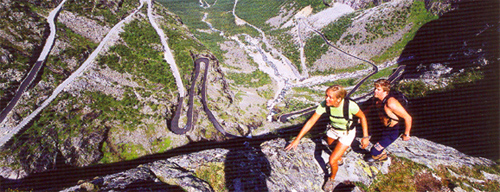
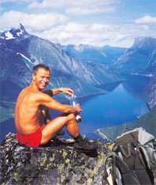

Welcome to ASIC 2006
The Fifth Annual Summer Interdisciplinary Conference (ASIC 2006) was held at the Grand Hotel Bellevue in Åndalsnes, Norway, on the Romsdalfjord on the western coast, July 2–7. Richard M. Shiffrin of Indiana University-Bloomington was the organizer.

Åndalsnes, Norway, on the Romsdalfjord — site of ASIC 2006.
The ASIC conference used the very successful format of previous ASIC and AIC conferences: days are free for leisure activities and the talks/posters are in the later afternoon/early evening, followed by dinner. The date was chosen to make it convenient for attendees to bring family and friends. The conference was open to all interested parties, and an invitation was not needed to attend. Due to the small number of spots for speakers, the organizer selected speakers, and subject to demand other participants were allowed to present posters on a day and time set aside for this purpose. The subject is interdisciplinary, within the broad frame of Cognitive Science.
Invitation
The conference was open to all scholars who fit the very general theme of the conference, and their family and friends. An individual invitation was not needed.

An evening concert during ASIC 2006.
Conference aims
The conference covered a wide range of subjects in cognitive science, including:
- neuroscience, cognitive neuroscience
- psychology (including perception, psychophysics, attention, information processing, memory and cognition)
- computer science and artificial intelligence
- machine intelligence and learning
- linguistics, psycholinguistics and computational linguistics
- philosophy of mind, cognitive science
The conference especially invited talks emphasizing theory, mathematical modeling, and computational modeling (including neural networks and artificial intelligence). Talks were required to be comprehensible and interesting to a wide scientific audience, with speakers providing overviews of current research areas as well as their own recent progress.
Conference format
The conference started with registration and a reception from 15:30–16:30 on Sunday, July 2. On subsequent days there were drinks and light snacks from 16:15–16:30. On all days through Friday, July 7, a session ran from 16:30 to 20:30, including a mid-session drink break, followed by a buffet dinner at the hotel with vegetarian options. The final day's dinner was a deluxe banquet buffet with wine and beer included.
Correspondence
Annual Summer Interdisciplinary Conference (ASIC 2006)
c/o Prof. Richard Shiffrin
Psychology Department
Indiana University
1101 E. 10th St.
Bloomington, IN 47405
Email: shiffrin@indiana.edu (seconded to Krystal Klein)
Talks & Abstracts
Authors, titles, and abstracts submitted for ASIC 2006, listed by speaker.
| Speaker | Title | Abstract | Author(s) |
|---|---|---|---|
| Fred AdamsUniversity of Delaware | Why there still has to be a mark of the mental | Proponents of embodied cognition and extended mind have repeatedly stressed the close relationship between the human brain and the human body. It is noted that the brain not only controls mental processes, but that the mental processes it controls are closely connected with the bodily processes it controls. In fact, it has been claimed that it is a mistake to try talk about mental processes in isolation from the bodily processes that the brain controls. It has even been claimed that one can in some cases "read off" properties of the human body from properties of the human mind, and that one should think of the mind as realized by the entire brain and body. However, surely not every process in the body or brain is a mental process. Without some mark of the mental (or the cognitive), there is no way to distinguish a mental process from a non-mental bodily process. With a mark of the mental, some of the claims about embodied cognition and mind extension may well be false. | Fred Adams — University of Delaware |
| Ken AizawaCentenary College of Louisiana | Extended Cognition and Cognitive Systems | Dotto is 75 years old. He suffers from late onset diabetes. In order to more effectively control his blood sugar level, he sometimes keeps a small 2"x4" notebook. In it he records such things as his measured blood glucose levels, what and how much he eats, and when he takes what medications. Sometimes he uses the notebook to make grocery lists and sundry "to do" lists. Sometimes, when he gets into a routine where his blood sugar is well under control, he stops using his notebook. When he is most active with his notebook, he tries to take it wherever he goes. He carries it in a small black bag that also contains some of his other diabetic supplies, such as insulin, syringes, and hard candies. Figure 1 is a page from his notebook. Part way down the top page he has "11/23" for November 23, 2004. The left hand column is dedicated to his diabetic regimen, the right hand column is about his other medications. On the morning of November 23, he records that his blood glucose (BG) was 135 and he took 9 units of Humerol brand insulin (9H). For breakfast, he had 1 cups of rice, which he calculated contains 67 grams of carbohydrates, and 4 ounces of orange juice, which contains 12 grams of carbohydrates, giving him a total of 79 grams of carbohydrates for breakfast. For lunch, he only lists his blood glucose and how much insulin he took. For dinner, he lists his blood glucose level, the restaurant where he had dinner, and how much insulin he took. In the right hand column, he notes, for example, that at 5:15 a.m., he took Synthroid, a synthetic thyroid hormone. He had his thyroid removed more than 20 years ago. At 6:27 a.m., he took Lortab, a pain reliever for a back problem. At 6:46, he took eye drops that were part of his regimen for recovering from cataract surgery. Lest one worry too much about Dotto, we should note that this disciplined regimen seems to play an important part in his enjoying a high quality of life. He is a capable driver, he goes to exercise class three times a week, plays bridge once a week, and manages a handsome financial portfolio. The common sense thing to say about this situation is that Dotto can't remember all the information he would like to have concerning his medical condition, so that he has to rely on notes. Dotto's cognitive apparatus is not up to managing all this information, so he relies on something else. On this view, Dotto's cognitive processes are confined to his central nervous system (CNS), where supplementary non-cognitive processes are found in his pencil and notebook. There are, of course, causal connections between Dotto and his pencil and notebook, but Dotto's cognitive processing is strictly limited to the confines of his central nervous system. In other words, causal processes are extended beyond the boundaries of the CNS, but cognitive processes are not. In the face of such common sense, a number of philosophers and psychologists have recently been advocating an alternative. They have argued that cognition is extended beyond the boundaries of the brain. According to this view, Dotto's cognitive processes literally extend from his brain into the pencil and paper of his notebook. Dotto's cognitive processing spans his brain, body, and the material pencil and notebook. Stated generally, the Extended Cognition Hypothesis (ECH) maintains that in (certain cases of) tool use, cognitive processes literally extend from the central nervous system into the external tools one uses. Many of the very same philosophers who endorse the Extended Cognition Hypothesis also defend a somewhat different hypothesis which we might call the Cognitive System Hypothesis (CSH). This hypothesis maintains that in (certain cases of) tool use, the central nervous system, body, and external tools one uses form a cognitive system. Although it is common to find these two hypotheses articulated almost interchangeably, I want to explore their inter-relations more carefully. In particular, I will argue, first, that the truth of the CSH does not support ECH. Second, and more surprisingly, I will argue that reflection on systems suggests that ECH encourages a pointless conceptualization of things as cognitive. Third, and most surprisingly, the truth of CSH actually conflicts with ECH. | Ken Aizawa — Centenary College of Louisiana |
| Colin AllenIndiana University | Mind and world -- an unprincipled distinction? | Philosophical arguments about "extended mind" often hinge on the question of whether there are principled reasons for drawing the boundaries of mind and cognition at the boundaries of the brain. Both sides seem to accept as common ground the idea that their position stands or falls on the answer to this question. I will examine this common assumption and argue that its uncritical acceptance may have distracted philosophers' attention away from a proper understanding of recent scientific attempts to model cognition as a continuous process between brain and environment. | Colin Allen — Indiana University |
| John Anderson | Mastering a Novel Algebraic Concept | I will describe the success students have learning a novel algebraic concept from minimal instruction. They are able to apply the concept in ways that they were not instructed and deal with cases that were not anticipated in the instruction. Their success in doing so poses challenges for cognitive architectures like ACT-R and perhaps more generally for current ideas about learning and performance. I will try to highlight these challenges. | John Anderson, Carnegie Mellon University |
| Irv BiedermanUniversity of Southern California | The Neural Basis of Object Recognition | Almost 20 years ago, a proposal was advanced that a considerable range of behavioral phenomena associated with human object recognition can be understood in terms of a representation positing an arrangement of simple part primitives distinguished by viewpoint invariant properties (= geons). Recent research on optical imaging as well as single unit activity of cells in macaque IT and behavioral and fMRI studies in humans provide a surprisingly strong confirmation of this proposal. | Irv Biederman — University of Southern California |
| Anna BorghiUniversity of Bologna, Italy | Language and objects: Simulation and affordances | I will describe two experimental lines, one in collaboration with Luca Oggianu and the other with Lucia Riggio. In a first line we investigated the effects of different kinds of visual primes on the processing of action words. Participants were presented with visual primes followed by verbs; their task consisted in deciding whether the verb referred to a concrete or to an abstract action (Buccino et al., 2005). The prime could consist of the photograph on a hand performing an action (e.g., to press), of the object (e.g., the switch), or of the interaction between hand and object (e.g., a hand pressing a switch). Response times were faster in the interaction condition than in the other two conditions, probably due to the fact that both canonical and mirror neurons were activated. More interestingly, even if the task required judging a verb, object primes were processed faster than action primes. This is consistent with studies on motor resonance showing that mirror neurons are activated by goals rather than by means (Umilt et al., 2001), and with studies showing that actions are encoded at a distal rather than at a proximal level (Hommel et al., 2001). In a second experimental line participants read action or observation sentences (Take the / vs. Look at the /) and had to decide whether or not the target represented the same object described in the sentence. The target was the photograph of an object graspable either with a power (e.g. brush) or with a precision grip (e.g. pen); the objects could be presented either with the affordances in the canonical position or not (e.g., a brush with the handle on the bottom part of the screen or an upright brush). Results showed that action sentences were processed faster than observation sentences, suggesting that during sentence comprehension a simulation process occurs. This was confirmed by the fact that objects with the affordances located in the canonical way were processed faster than objects not affording actions; this was true in particular for objects graspable with a power grip and when objects were preceded by an action sentence. The results are compatible with the idea that action words as well as visual objects activate canonical neurons. The results of both experimental lines will be discussed within the framework of an embodied view of cognition. | Anna Borghi — University of Bologna, Italy |
| Andrew CohenUniversity of Massachusetts Amherst | Inducing multiple independent classification templates from stochastic stimuli | Current techniques for determining the pixel values used by an observer to classify an image usually assume linear classification and a single template. Psychological evidence suggests, however, that certain image features are detected independently and then combined to produce a classification. We propose a Bayesian network model of classification that encapsulates this more complex structure. The model is used in conjunction with machine learning techniques to discover a set of templates that describe the independent features used by both simulated and human classifiers. | Andrew Cohen — University of Massachusetts Amherst |
| Amy CrissCarnegie Mellon University | The consequences of differentiation in episodic memory | When items on one list are studied longer than items on another list, the improvement in performance typically manifests as an increase in the hit rate and a decrease in the false alarm rate. This finding is referred to as the strength based mirror effect and has been accounted for by assuming that participants adopt a more strict criterion following a list containing items studied several times. An alternative account is found in differentiation models where longer study leads to a more accurate memory representation for the studied item. The more accurate the stored representation, the less it is confusable with a randomly chosen foil, resulting in a decrease in the false alarm rate. Differentiation models make additional a priori predictions that the level of differentiation of a study list interacts with the similarity between the studied items and the foils. These predictions are empirically tested and confirmed. | Amy Criss — Carnegie Mellon University |
| Eddy DavelaarUniversity of California, San Diego | Preview benefits in visual selective attention: "Hang on a second!" | In the Eriksen flanker paradigm, peripheral flankers can help or harm performance depending on whether they indicate the correct or incorrect response of a central target. With this paradigm it has been observed that immediate preview of the flankers reduces flanker effects. The reported experiments investigated this phenomenon, establishing the separate contributions of identity preview and response preview. Participants made CV judgments on the middle letter of a five-letter string and different durations of preview were examined. The results indicate that response preview effects are small, and apply similarly across location. In contrast, identity preview is location specific, producing results that reverse depending on flanker preview versus target preview. We explain these effects in terms of perceptual discounting that accrues over time as a function of preview durations. Depending on which locations and items are previewed, this can result in a "repetition blindness" for flankers, which reduces flanker interference, or a repetition blindness for the target, which greatly harms performance. This theory is implemented in a model with dynamic neural accommodation within spatially specific identity detectors and spatially non-specific evidence accumulators (response units). | Eddy Davelaar — University of California, San Diego |
| Gary, Central Michigan University Fuller | Empty Names & Pragmatic Implicatures | What are the meanings of empty names "Vulcan," "Pegasus," or "Santa Claus" in sentences such as "Vulcan is the tenth planet," "Pegasus flies," or "Santa Claus does not exist"? Our view Adams et al. 1992, '94,'97a, 2004) is a direct-reference account on which empty names lack meaning, in combination with a pragmatic-implicature account of why empty names seem to have meaning. The appearance of meaning comes from associated implicated descriptions that do not give the meaning of the names. In a recent article (2005) Mitch Green criticizes our view of empty names. He argues that our "pragmatic defense" fails. He thereby implicitly casts doubt on our whole direct-reference package. According to Green there are a number of familiar mechanisms that can generate pragmatic implicatures: conversational and conventional mechanisms, discussed in detail by Grice (op. cit.), and other mechanisms, such as ones involving expression, that are neither conversational nor conventional. Green argues that none of these familiar mechanisms; can generate the implicatures needed by our view. We could try to counter Green by showing that there are unfamiliar mechanisms, mechanisms other than those that he mentions, that can generate the kind of implicatures that we need. Indeed, towards the end of his paper Green allows that this is a possible way to save the pragmatic defense, although he is skeptical of it (23-24). Luckily, we will not have to take this route. The main purpose of our paper is to show that our view works despite Green's suggestions to the contrary. We shall show that Green's arguments that the Gricean mechanisms of conversational or a conventional implicature cannot generate the implicatures that our view needs are seriously flawed. Towards the end of our paper we also briefly sketch an account of what the relevant Gricean mechanisms might be. | Gary, Central Michigan University Fuller |
| Claudia Gonzalez-VallejoOhio University | The role of scaling in models of choice: Comparing the proportional difference model to decision field theory in decisions over consumer products | Three studies tested the stochastic difference choice model (proportional difference, PD, version in Gonzalez-Vallejo, 2002) in the domain of decision making under certainty. Consumer services and products, hotels defined by price and quality and MP3 players defined by price and memory size, served as choice pairs. The ordinal prediction relating the proportional difference variable, d (computed from stimuli pairs), and the observed choice proportions was supported. Model fitting showed that PD's estimated decision threshold measured within-person sensitivity to value attribute differences both at baseline and after persuasion manipulations. The threshold was also related to whether individuals were low or high in Need for Cognition (NFC, Cacioppo & Petty, 1982). Cross-validation strategies also showed PD to be descriptive and robust. | Claudia Gonzalez-Vallejo — Ohio University |
| Steve Harris | Extended Cognitivism and Intrinsic Content | I defend the thesis of extended cognitivism against a particular type of objection that is insightful but incorrect. I call it the intentionality objection. The extended cognitivist argues that human cognition (and consequently, quite plausibly, the human mind) is something extended, something literally comprised of external as well as internal states and processes. The popular account emphasizes the role that technological artifacts play in extending the human cognitive system by becoming functional parts of that system. The claim is that technologies in use sometimes constitute, in part, the vehicles of cognitive (and perhaps even mental) content. Intentionalist critics take such radical anti-individualist consequences to indicate a failure on the part of the extended cognitivist to properly distinguish what is cognitive from what is not cognitive. According to the internal intentionalist, cognition extends no further than the individual, since cognition requires intentionality and intentionality extends no further than the individual. In this talk I consider a specific version of the intentionality objection that assumes that cognitive systems involve states and processes that have intrinsic content. Since the states and processes implemented in tools (or, "external, nonbiological vehicles" generally) never involve intrinsic content, there is no good reason for believing that cognition ever extends into tools and other artifacts. This objection fails, however, to show that extended cognitivism is false of human cognition. For the purposes of bounding the cognitive system anyway, the appeal to intrinsic content is deeply and systematically problematic. The notion is either too weak to uniquely identify human cognitive agents or else it is too strong to be plausibly applied to them. The missing element in an adequate appeal to the intentional capacities of human cognitive systems, I argue, is wide-world human technology. | Steve Harris, Indiana University |
| Dave HuberUniversity of California San Diego | Individual Differences in Face Processing as Revealed with Priming | Recent experiments with the immediate repetition of words demonstrated that brief prime presentations help target perception whereas long prime presentations harm target perception (Weidemann, Huber, & Shiffrin, 2005). In this paradigm, targets are briefly flashed and masked and performance is assessed through a two-alternative forced choice in which the prime can be identical to the target, the foil, or neither choice. In a series of experiments, we extended this paradigm to face perception, mapping out similar costs and benefits of immediate face repetition as a function of prime duration. Unlike words, qualitative individual differences were observed: the change from positive to negative priming was greater for participants with lower perceptual face thresholds. In a second experiment, this effect was only seen with upright, but not inverted faces. In a third experiment, these individual differences were found to be resistant to manipulations designed to change the basis of strategic responding in terms of featural or configural information. A fourth experiment demonstrated that the target duration needed for perceptual threshold does not itself explain these effects, and, instead, increasing target duration produced stronger negative priming effects. We implemented a multi-layer dynamic neural network model of these results that includes synaptic depression to produce the transition from positive to negative priming. The model assumes that higher level configural processing is less developed in some individuals, forcing them to rely more heavily on featural information. | Dave Huber — University of California San Diego |
| Steve LewandowskiUniversity of Western Australia | Temporal isolation in short-term memory | According to temporal distinctiveness models, items that are temporally isolated from their neighbors during list presentation are more distinct and thus should be recalled better. While there is clear evidence that free recall benefits from temporal isolation, we conclude on the basis of several recent studies that no reliable temporal isolation effects exist in serial recall. We present two additional experiments which reconciled those two discrepant outcomes by comparing a retrieval task in which output order is controlled (forward serial reconstruction) with a virtually identical task in which report order is unconstrained (free reconstruction). Temporal isolation effects emerged in the unconstrained task irrespective of actual report order if (and only if) people expected free report at the time of study. The data suggest that people can choose to rely on the temporal dimension at encoding, but do so only when they expect report order to be unconstrained. By contrast, when people expect strict forward serial retrieval, they do not use time to differentiate between items at encoding. | Steve Lewandowski — University of Western Australia |
| Ken MalmbergUniversity of South Florida, Tampa | Directed Forgetting in Free Recall and Recognition | Forgetting can occur as the result of unconscious or automatic memory processes or as the result of their conscious control. The latter form of forgetting is often referred to as suppression, repression, or inhibition, and it is often investigated in the laboratory using the directed forgetting procedure. The authors describe and empirically test a formal model of directed forgetting, implemented within the framework of the Search of Association Memory Theory (SAM). The critical assumption is that episodic memory can be suppressed by a conscious attempt to alter the mental context in which new memories are encoded. This model captures much of the data. However, additional assumptions are required to account for serial position and output order effects and the effect of forgetting instructions on recognition memory. | Ken Malmberg — University of South Florida, Tampa |
| Richard MenaryUniversity of Hertfordshire | Defending the extended mind by attacking the parity principle | In a joint authored paper Mike Wheeler and I argue that the parity principle as a motivational tool for the extended mind is ill formulated by Clark and Chalmers. This has lead to some serious misunderstandings of the extended mind project (see for example Adams and Aizawa 2001 and 2006, Rupert 2004). We argue that the claim that underlies the extended mind hypothesis is not (or should not be!) that external factors count as themselves the proper parts of a cognitive process by being coupled in a particular way to an already existing cognitive agent or cognitive system, but rather that internal and external elements can, in certain circumstances, be integrated parts of a single causal system that itself counts as a cognitive system (what I, elsewhere, call cognitive integration Menary 2006). The consequence is that a clear understanding of this integration is required and standard internalist criticisms turn out to have no purchase on the extended mind. | Richard Menary — University of Hertfordshire |
| Agnes MoorsGhent University, Belgium | Five sources and five solutions to the all-or-none view of automaticity | Feature-based accounts define the concept automatic in terms of a number of features such as unintentional, goal-independent, autonomous, purely stimulus-driven, unconscious, uncontrolled (in the sense of alter/stop), efficient, and/or fast. The concept nonautomatic covers the opposites of these features. Different feature-based accounts differ with regard to the features they emphasize most and with regard to the amount of coherence they assume among features. The best known feature-based account is the dual-mode view, which assumes a perfect coherence among the features of each mode (automatic processes hold all automatic features; nonautomatic hold all non-automatic features). The dual-mode view has been criticized on the basis of empirical evidence showing a lack of cooccurrence among the features of each mode (cf. Bargh, 1992; Logan, 1985 ). Nevertheless, the dual mode view seems difficult to shake off. I discuss five sources that have been or can be appointed as responsible for the creation and/or persistence of the dual mode view: The capacity view of attention (Shiffrin & Schneider, 1977), the New look in perception (Bruner & Goodman, 1947), the computational framework of cognition in general, assumptions of conceptual overlap among features, and assumptions of one-to-one modal relations (i.e., the presence of one features is considered a necessary and/or sufficient condition for another). After that, I discuss five alternative views that have been proposed to replace the dual-mode view: The triple mode view (e. g., Carver & Scheier, 2002 ), the decompositional view that does away with the general concept of automaticity (Regan, 1981), the decompositional view that conceives of automaticity as a gradual concept (Logan, 1985; Shiffrin, 1988), the view that chooses one minimal feature of automatic processes (Bargh, 1989), and the construct-based approach (Logan, 1988). A critical review of these alternatives favors a gradual decompositional view. This view faces its own limitations, which I propose can be accomodated by a relative rather than a purely gradual view. | Agnes Moors — Ghent University, Belgium |
| Shane MuellerIndiana University | REM-II: A model of the formation and use of episodic memory and semantic knowledge | Episodic memories form through the interpretation of events by semantic knowledge, while semantic knowledge forms by the accumulation of episodic memories. Through this two-way process, our extensive episodic memory for events in the past co-evolves with our vast knowledge about the world. We present REM-II, a new bayesian account of episodic and semantic memory that explicitly models the development of these two aspects of our long-term memory. REM-II encodes episodic traces as sets of features with different values, and semantic knowledge as a set of co-occurrences of these features, while assuming that co-occurrence of concepts allows for relational and semantic similarity to emerge. The use of feature co-occurrence allows polysemy and connotation of meaning to be encoded within a single structure, based on the distinct contexts in which a concept appears. We demonstrate knowledge formation in REM-II and show the emergence of semantic spaces through experience and the resultant polysemy and biasing of encoding that REM-II produces. | Shane Mueller — Indiana University |
| Danko NikolicMax-Planck Institute for Brain Research | Phase precedence and time delays in the visual cortex | Despite extensive investigation, we still do not fully understand how the brain represents visual information. Here we present results indicating that time delays between action potentials, that are as small as one millisecond, can be highly informative and can carry stimulus-related information. Based on cross-correlation analysis of simultaneous extracellular recordings from a large number neurons in cat area 17, we show that such small temporal delays form precise and repetitive spatio-temporal patterns, such that each neuron has its own preferred time of firing relative to the firing times of the other neurons. The delay between two neurons rarely exceeds 3 ms and thus, the time scale of the resulting spatio-temporal patterns fits within a single cycle of a the gamma oscillation. Moreover, the preferred relative firing times of neuronal discharges change with stimulus properties. These changes are partially related to neuronal activation but are, for the most part, not correlated to the other neuropy siological measures that contain stimulus-related information (i.e., neuronal rate responses and synchrony). Instead, these fine spatio-temporal patterns seem to constitute an independent source of information. These results open up the possibility that downstream readout units take advantage of these spatio-temporal patterns during computation. If true, small time delays would play an important role in the cortical representation of visual stimuli.Brain connections revealed by reverse correlation | Danko Nikolic — Max-Planck Institute for Brain Research |
| Clark OhnesorgeCarleton College | The modulation of visual attention by emotion-eliciting stimuli | The emotional valence evoked by visual stimuli has been shown to influence performance across a large range of cognitive and perceptual tasks. Generally the concept of attention is invoked in developing theoretical explanations for this phenomenon with a conclusion that negative stimuli attract or receive more attention than do positive or neutral stimuli. In prior research using lexical stimuli we explored the temporal unfolding of an attentional window that differed with the valence of the eliciting stimulus and opened and closed within a time envelope of about 500 milliseconds. In the current research, we extend our manipulation to include arousal as well as valence and adopt pictorial stimuli to further address the phenomenon of attentional modulation. | Clark Ohnesorge — Carleton College |
| Diane Pecher | Retrieval Induced Forgetting | Retrieval practice with particular items from memory can impair the recall of related items on a later memory test. Both inhibitory and associative explanations have been offered for this retrieval-induced forgetting effect. The independent probe technique has been developed to distinguish between these two accounts. In this paradigm, memory of a suppressed item is tested with an extralist cue that is unrelated to the practiced item. We argue that different versions of this paradigm cannot adequately distinguish between inhibitory and associative accounts. Using an adapted version of the paradigm, we demonstrate that retrieval-induced forgetting of both semantic and episodic memory items does not occur using item-specific independent cues, but does occur when related cues are used. These results pose problems for inhibitory accounts. | Diane Pecher, The Netherlands University Rotterdam |
| Jeroen RaaijmakersUniversity of Amsterdam, The Netherlands | A non-inhibitory explanation of retrieval inhibition | Retrieval inhibition refers to the phenomenon that practicing some items leads to generalized (cue-independent) inhibition of related items. The cue-independent nature of these effects appears to make these effects difficult to explain from by traditional interference accounts based on competitive retrieval processes. An alternative explanation based on the REM model will be presented. I will also present the results of new experiments aimed at testing this alternative account of inhibition effects. | Jeroen Raaijmakers — University of Amsterdam, The Netherlands |
| Lynne, Carnegie Mellon University Reder | The interaction of implicit and explicit memory processes in learning and behavior | I have long argued that most tasks labeled as part of implicit memory operate on the same representations that are used for explicit memory tasks. I will review the evidence for why these assumed separate memory systems are really not separate at all and speculate as to why the erroneous assumptions developed. I will go on to argue why so much of learning is implicit and should be implicit and when learning should be explicit. | Lynne, Carnegie Mellon University Reder |
| Joerg RieskampMax Planck Institute for Human Development, Berlin, Germany | Perspectives of probabilistic inferences: Reinforcement learning and an adaptive network compared | The assumption that people possess a strategy repertoire for inferences has been raised repeatedly. The strategy selection learning theory specifies how people select strategies from this repertoire. The theory assumes that individuals select strategies proportional to their subjective expectations of how well the strategies solve particular problems; such expectations are assumed to be updated by reinforcement learning. The theory is compared to an adaptive network model that assumes people make inferences by integrating information according to a connectionist network. The network's weights are modified by error correction learning. The theories were tested against each other in an experimental study with an dynamic environment in which the performance of inference strategies change. In this situation a quick adaptation to the new situation was not observed; rather individuals got stuck on the strategy they had successfully applied previously. This "inertia effect" was most strongly predicted by the strategy selection learning theory. | Joerg Rieskamp — Max Planck Institute for Human Development, Berlin, Germany |
| Rob RupertUniversity of Colorado | A dilemma for the extended mind | The hypothesis that human cognition extends into the environment can be understood as a claim about the subjects of cognitive states or, instead, as a claim about the implementation or realization of cognitive states. In this paper, I argue that neither approach offers a promising theoretical framework within which to pursue empirical psychology. Considered as a theory of the subjects of cognitive states-i.e., as a claim about the systems that instantiate cognitive properties-the extended framework does substantial violence to productive research programs and methods in cognitive psychology. Such research compares systems' reactions across different experimental conditions, constructs theories to account for subjects' various responses, and designs new experiments to test those theories. These methods presuppose that the same systems (or the same kinds of system) persist through variations in conditions and experiments. In contrast, the actual extended systems discussed in the literature are fleeting systems, often composed of organisms together with items presented in experimental conditions. The extended view fares no better when interpreted as a claim about the realizers of cognitive states. Not just anything causally related to a cognitive state can count as part of the realizer of that state. The causal role of the realizer of a personal-level cognitive state must mirror the causal profile of the state so realized. Extended realizers typically do not satisfy this requirement, and for principled reasons. | Rob Rupert — University of Colorado |
| Adam SanbornIndiana University | Alternative algorithms for the rational model of categorization | The rational model of categorization (RMC; Anderson, 1990) assumes that categories are learned by clustering similar stimuli together using Bayesian inference. As computing the posterior distribution over all assignments of stimuli to clusters is intractable, an approximation algorithm needs to be used. The original algorithm used in the RMC was an incremental procedure that had no guarantees for the quality of the resulting approximation. Drawing on connections between the RMC and models used in nonparametric Bayesian density estimation, we present two alternative algorithms for the RMC that are asymptotically correct. Using these alternative algorithms allows the effects of the assumptions of the RMC and the particular inference algorithm to be explored separately. We look at how the choice of inference algorithm changes the strength of predicted order effects. | Adam Sanborn — Indiana University |
| Yuka SasakiHarvard medical School | The primary visual cortex fills in color | One of the most important goals of visual processing is to reconstruct adequate representations of surfaces in a scene. Surface representation is thought to be produced mainly in the mid-level vision and that V1 activity is solely due to feedback from the mid-level stage. However, contradicting empirical and theoretical reports have also been proposed. One reason for this controversy may be due to the tacit assumption that surface representation is made by single processing rather than multiple processing. Surface representation could be a result of many different aspects of processing. Another reason for the controversy may be that most studies have not controlled effects of attention on a surface. Thus, it is necessary to examine how subcomponents of a surface contribute to surface representation with attentional effects controlled. Here, we measured fMRI signals corresponding to "neon color spreading" that is thought to be due to interactions between mechanisms for two surface subcomponents --- color filling-in and illusory contours. In the present study, we used 3T fMRI that provides a fine spatial resolution so that brain activity corresponding to illusory contours and filling-in both as surface subcomponents could be spatially dissociable if surface representation occurs in the retinotopic visual areas. To eliminate or decrease the attentional component of feedback signals, subjects performed an attentionally-challenging task unrelated to the surface perception. Activity for filling-in was observed only in the primary visual cortex, whereas activity for illusory contours was observed in multiple visual areas. These findings indicate that surface representation is produced by multiple rather than single processing, and that V1 activity for surface representation is not solely from feedback from higher cortical stages. | Yuka Sasaki — Harvard medical School |
| Lael SchoolerMax Planck Institute for Human Development, Berlin, Germany | Why you think Milan is larger than Modena: Neural correlates of the recognition heuristic. | When ranking two alternatives by some criteria and only one of the alternatives is recognized, participants overwhelmingly adopt the strategy, termed the recognition heuristic (RH), of choosing the recognized alternative. Understanding the neural correlates underlying decisions that follow the RH could help determine whether people make judgments about the RH's applicability or simply choose the recognized alternative. | Lael Schooler — Max Planck Institute for Human Development, Berlin, Germany |
| Aaron SeitzBoston University | Reinforcement and blinks in perceptual learning | We are constantly learning new things as we go about our lives. In addition to learning new facts, procedures and concepts, we are also refining our sensory abilities. How and when these sensory modifications take place is the focus of intense study and debate. While sensory improvements were thought only to occur when attention is focused on the stimuli to be learned (task-relevant learning), recent studies demonstrate performance improvements independent of the focus of attention (task-irrelevant learning). I will present research that shows that task-irrelevant learning can occur for motion stimuli that are paired with the targets of a letter identification task. These results are consistent with a learning model in which long-term sensitivity enhancements to task-relevant or irrelevant stimuli occur as a result of timely interactions between diffused signals triggered by task performance and signals produced by stimulus presentation. To test this model and demonstrate that high-level processing is necessary for this unconscious, automatic learning, research of a "blink" in attentional processing, which occurs when subjects must process two task-targets presented in rapid succession, is adapted to study perceptual learning. This "blink" has been shown to result from a bottleneck in high-level processing (such as decision making and memory encoding) but does not affect perceptual and semantical processing. Results show that while subjects obtain sensory improvements for motion stimuli presented outside of the time-window of this "attentional blink", no learning occurs for stimuli presented during the attentional blink. | Aaron Seitz — Boston University |
| Richard Shiffrin | Paradoxes real and imagined | I use a variant of the 'Exchange Paradox' to motivate a discussion of the psychological basis of rationality, and the consequent appearance and actuality of paradox. To whet the reader's appetite, the paradox follows: Suppose one flips a coin until a heads appears on flip n, and places 10**(n) and 10**(n+1) dollars in each of two sealed envelopes. The envelope with the larger amount is handed to you with probability 0.8, else you are handed the other envelope. You open your envelope and observe $X. You are to either keep this amount or irrevocably exchange for the contents of the other, with the goal of maximizing expected payoff. Strangely, it can be shown that one should exchange regardless of X. It seems paradoxical to 'always' exchange what you know to be the envelope with the higher probability of having the larger amount. | Richard Shiffrin, Indiana University |
| George SperlingUniversity of California Irvine | How the two eyes combine information: A neurally-plausible mathematical theory and some supporting evidence | In binocular combination, light images on the two retinas are combined to form a single "cyclopean" perceptual image, in contrast to binocular rivalry which occurs when the two eyes have incompatible ("rivalrous") inputs and only one eye's stimulus is perceived. We propose a computational theory for binocular combination based on two neurally plausible principles of interaction: in every spatial neighborhood (1) each eye exerts gain control on the other eye's signal in proportion to the contrast energy of its own input and (2) each eye additionally exerts gain control on the other eye's gain control. For stimuli of ordinary contrast, when either eye is stimulated alone, the predicted cyclopean image is the same as when both eyes are stimulated equally -- a significant nonlinearity that coincides with an easily observed property of natural vision. The gain-control theory is contrast dependent: Very low-contrast stimuli to the left- and right-eyes add linearly to form the predicted cyclopean image. The intrinsic nonlinearity manifests itself only as contrast increases. To test the theory more precisely, 48 combinations of horizontal sinewave gratings that differ in phase and contrast are presented to each eye; the apparent phase of the cyclopean sinewave indicates the relative contributions of the two eyes. In another experiment, noise added to to the stimulus in one eye is shown to cause that eye to dominate in binocular combination. In all, six experiments define the paramters of the theory; the theory accounts for 96.9 to 99.4% of the variance of these data. Conclusion: A simple, robust, physiologically plausible gain-control theory accurately describes an early stage of binocular combination. | George Sperling — University of California Irvine |
| Neil StewartUniversity of Warwick, Warwick, UK | Decision by sampling | We present a theory of decision by sampling (DbS) in which, in contrast with traditional models, there are no underlying psychoeconomic scales. Instead, we assume that an attribute's subjective value is constructed from a series of binary, ordinal comparisons to a sample of attribute values drawn from memory and is its rank within the sample. We assume that the sample reflects both the immediate distribution of attribute values from the current decision's context and also the background, real-world distribution of attribute values. DbS accounts for concave utility functions; losses looming larger than gains; hyperbolic temporal discounting; and the overestimation of small probabilities and the underestimation of large probabilities. | Neil Stewart — University of Warwick, Warwick, UK |
| Rick ThomasUniversity of Oklahoma | A model of hypothesis generation, probability judgment, and information search. | The talk will present a summary of our work with HyGene, a cognitive process model of how decision makers generate, evaluate, and test hypotheses. The model is an integration of theoretical constructs from the long-term memory, working memory, and judgment and decision making literatures. In simulations, we illustrate HyGene's account of several judgment phenomena, including the effects of WM limitations and time pressure on hypothesis generation and probability judgment. Implications of the model for understanding the conditions that lead to diagnostic information search versus positive testing and pseudodiagnostic information search will be discussed. In general, our work with HyGene is focused on understanding how well-known memory constructs (e.g., similarity-graded retrieval and limited working-memory capacity) systematically constrain judgment processes. Much of our work has found that memory processes lead to hypothesis generation, evaluation, and testing behaviors that are quite adaptive. | Rick Thomas — University of Oklahoma |
| Bosco TjanUniversity of Southern California | Classification images, spatial uncertainty, and visual crowding | Invariance or constancy is a hallmark of visual processing. Linear techniques such as classification images and spike-triggered averaging are thought to be incapable of recovering the front-end template or receptive-field structure of a higher-order visual mechanism whose response may be invariant to the position, size, or orientation of a target. Higher order techniques such as spike-triggered-covariance) also cannot handle even the simplest kind of positional invariance for spatially broadband stimuli. Using the max-pooling property of a typical uncertainty model, we show analytically, in simulations, and with human experiments (single-letter identification in fovea and periphery, with and without positional uncertainty) that the effect of intrinsic uncertainty (i.e. invariance) can be reduced or even eliminated by embedding a signal of sufficient strength in the masking noise of a classification-image experiment. We refer to this technique as "signal clamping". We show that the signal-clamped classification images from the error trials contain a clear high-contrast image that is negatively correlated with the perceptual template associated with the presented signal; they also contain a low-contrast "haze" that is positively correlated with the superposition of all the templates associated with the erroneous response. In the case of positional uncertainty, we show that this "haze" provides an estimate of the spatial extent of the uncertainty. With the effect of intrinsic uncertainty significantly reduced by signal clamping, we further show that a covariance analysis can be used to different regions of a classification image to reveal the elementary features that are the components of the perceptual template seen in the classification image. We applied this technique to study the change in features and feature integration during visual crowding. | Bosco Tjan — University of Southern California |
| Eric-Jan WagenmakersUniversity of Amsterdam, The Netherlands | Modeling choice behavior in the Iowa gambling task | The purpose of the Iowa gambling task, developed by Damasio and Bechara, is to mimic real-life decision making in an experimental context. The Iowa gambling task has recently been used to assess decision making deficiencies in several different clinical populations. Busemeyer and Stout proposed a reinforcement learning model to account for choice behavior in the Iowa gambling task. Their model incorporates three components of decision making: weighing of gains versus losses, memory for past payoffs, and response consistency. A test of specific influence demonstrates the validity of the model. Based on a large-sample study, it is argued that despite the validity of the model, care should be taken when the model is applied to clinical diagnosis on the level of the individual. Several extensions of the model are discussed. | Eric-Jan Wagenmakers — University of Amsterdam, The Netherlands |
| Takeo WatanabeBoston University | Perceptual learning without perception is not passive and results in robust perception | The brain demonstrates an amazing ability to become increasingly sensitive to important stimuli. It is often claimed that we become more sensitive only to the critical signals in the tasks we attend to. However, our recent series of experiments have shown that perceptual learning occurs with little attention. First, mere exposure to sub-threshold and task-irrelevant motion coherence signals led to enhancement in sensitivity to the motion direction. This finding indicates that attention is not necessary for perceptual learning (Watanabe, Nanez & Sasaki, 2001, Nature). Second, exposure to two types of task-irrelevant motion that are processed at different levels of visual processing improved sensitivity only at the lower-level. These results suggest that task-irrelevant perceptual learning occurs at a very low-level (Watanabe et al, 2002, Nat Neuroscience). Third, we addressed the question as to whether such task-irrelevant learning occurs purely passively (caused by stimulus-exposure). During exposure, we presented four different directions of motion an equal number of times, but the direction of interest (DOI) was paired with the task targets. If learning is purely passive, thresholds should improve equally for all the presented directions. Surprisingly, the threshold improved only for the DOI. These results show that learning of a task-irrelevant and sub-threshold feature is not purely passive, but it occurs only when the feature is correlated with a task target (Seitz & Watanabe, 2003, Nature). Finally, we have recently found that such learning is so robust that it sometimes results in perception of the exposed direction even when nothing is presented (Seitz, et al, 2005, PNAS). Based on these findings, we propose a model in which diffuse reinforcement learning signals perform an important role, complementary to focused attention in perceptual learning. | Takeo Watanabe — Boston University |
| Chen YuIndiana University | Statistical Cross-Situational Learning to Build Word-to-World Mappings | There are an infinite number of possible word-to-world pairings in naturalistic learning environments. This mapping problem might be constrained in the task of word learning by computing distributional statistics across words, across referents, and most importantly across the co-occurrences of these two at multiple moments. As a preliminary test of this idea, we briefly exposed adults to multiple spoken words and multiple pictures of individual objects with no information about word-picture correspondences. Nonetheless, subjects learned over trials the word-picture mappings through cross-trial statistical relations. Different learning conditions compared the degree of within-trial reference uncertainty, the number of trials and the length of trials. We also propose and implement a computational model and feed it with the same training data used in different learning conditions in experimental studies, to shed light on the possible underlying mechanism of statistical learning. Overall, these results suggest that statistical cross-situational learning may be one of fundamental mechanisms to tackle the word-to-world mapping problem. | Chen Yu — Indiana University |
| Rene Zeelenberg | False recognition of nonwords | Participants studied lists of nonwords (e.g., froost, floost, stoost, etc.) that were orthographic-phonologically similar to a nonpresented critical lure, which was also a nonword (e.g., ploost). Experiment 1 showed a high level of false recognition for the critical lure. Experiment 2 showed that the false recognition effect was also present for forewarned participants who were informed about the nature of the false recognition effect and told to avoid making false recognition judgments. Experiment 3 used an overt-rehearsal paradigm and showed that the lure was allmost never rehearsed during study. The present results show that false recognition effects can be obtained even when the critical lure itself is not stored during study. These findings are problematic for currently popular accounts of false recognition which attribute false memories to implicit associative responses or spreading activation but are easily explained by global familiarity models of recognition memory. | Rene Zeelenberg, The Netherlands Erasmus University Rotterdam |
Registration
The registration fee covered room and equipment rentals, snacks, banquet, and more. The fee rose in steps as the conference date approached.
Fee schedule (US dollars)
| Payment prior to | By check | By PayPal |
|---|---|---|
| Jan 1, 2006 | $150 | $155 |
| Mar 1, 2006 | $175 | $180 |
| May 1, 2006 | $200 | $205 |
| Later | $225 | $230 |
There were two ways to pay: send a check to ASIC 2006, c/o Richard M. Shiffrin, Psychology Dept., Indiana University, Bloomington, IN 47405; or pay online by PayPal (a $5 handling fee applied).
Travel to and about Åndalsnes
A car for local transport during the conference is useful, though sharing cars for daily outings is possible. There is regular bus service and a rail line serving Åndalsnes, but having the freedom to travel on one's own schedule is a great advantage.
Aerial view of the mountains surrounding Åndalsnes.
Automobile
Hertz was the conference's preferred rental provider, with agencies in Oslo, Bergen, Ålesund, Molde, and Åndalsnes, offering a 10% discount off their "Affordable Travel" rates with a printed coupon.
- From Bergen: E39 north through fjordland (ferries, bridges, tunnels), connecting to E136 near Åndalsnes — 440 km, about 7.25 hrs driving (excluding ferries).
- From Oslo: E6 then E136, following the rail line and passing the Trollveggen cliffs — 448 km, about 6.5 hrs.
- From Ålesund: E39 then E136 — 121 km, about 1.8 hrs.
- From Molde: mainly route 64 — 55 km, about 1.2 hrs, plus the Afarnes ferry crossing (every 30–40 minutes).
Air
Most international flights arrive in Oslo or Bergen; travelers continue to Åndalsnes by car, rail, bus, or additional internal flights. Internal flights typically land at Ålesund (121 km) or Molde (55 km), continuing by car or bus.
Rail
Regular rail service runs direct from Oslo to Åndalsnes, taking about 5–6 hours, with several daily departures each direction.
Bus
Norway's bus network, led by Nor-Way Bussekspress, is far more extensive than its rail network and also spectacularly scenic, with connections to trains and ferries throughout the country.
Combined itineraries
A popular option: take the train from Oslo to Bergen (with a side trip on the spur rail line to the fjord at Flåm), then a boat tour through the fjords — including the Sognefjord — to Ålesund, Molde, or nearby Romsdalfjord sites, connecting by bus or car to Åndalsnes, and returning to Oslo by train through Romsdalen.
Lodging
ASIC 2006 was held at the Grand Hotel Bellevue in Åndalsnes, well designed for the conference with a large meeting room set up classroom style and audio-visual capability in place.
Near the Grand Hotel Bellevue, Åndalsnes.
The hotel has about 80 rooms, singles and doubles, with 50 held for the ASIC group starting Sunday, July 2 through Friday, July 7 (checkout Saturday, July 8); additional days could be accommodated before the hotel filled.
Reservations were made directly with the hotel: telephone 47-71-22-75-00, fax 47-71-22-60-38, email booking@grandhotel.no.
Prices
As of September 7, 2005, the exchange rate was 6.2652 Kroner per US$1. The charge per room per day for ASIC attendees was K 1070 for a single and K 1270 for a double, including daily breakfast and dinner for each person.
A few attendees each year preferred to camp in nearby areas; there are quite a few nice campsites, many with cabins, in the Åndalsnes area, though most require a car to reach the daily meetings.
Climate, Weather & Clothing
The weather in Åndalsnes is almost always quite pleasant in July, with high temperatures generally about 18°C (65°F).
Because sunlight extends almost 24 hours, low temperatures do not differ very much from the highs. Although the nearby mountains rise almost 6,000 ft. from the fjords, this elevation difference is not sufficient to cause large temperature differences except in bad weather.
Fjordland is on the west coast of Norway, facing the North Atlantic, so even in July it is relatively common to find unsettled weather for short stretches. Precipitation occurs on about half the days of the month for at least a brief period, but only about eight days see more than 0.12 inches, and only about two days see more than 0.4 inches.
On days with particularly poor weather in Åndalsnes, it is usually possible to drive inland, up the Romsdal valley toward Bjorli and Dombås, and reach good weather after 30–40 km.
Activities
The official guide service for ASIC 2006 was Norgesguidene, offering rock climbing, mountaineering, scrambling, and hiking around Åndalsnes.

Hiking in the mountains around Åndalsnes.
Rock climbing

Rock climbing on a Romsdal cliff face.
The most famous local feature is Trollveggen, the largest cliff face in Europe, rising about 5,500 feet from the road (the top 3,000 feet overhanging). Attendees were not expected to climb it — the routes are unstable, extremely difficult, and the easiest option is 48 pitches long — but numerous excellent rock climbing sites exist nearby, from single-pitch areas to very long multi-pitch faces on both sides of the Romsdal valley.
Recommended guided climbs included Romsdalshorn (Norwegian grade 4−, 8–10 hrs, a Norwegian classic), Venjetind via the Standard Route (an easy scramble to the highest peak in Romsdalen, 6,000 ft.), Bispen via the east ridge (seven pitches of grade 4+), and day climbs at the crags Norafjell and Hornaksla.
Group tours (Tuesday and Thursday)
- Walk to the top of the Trollwall — 6–7 hours round trip from Trollstigen, 700 NOK per person.
- Scramble up Bispen via the north ridge — 6–7 hours, some exposure, 700 NOK per person.
- Walk up the Finnan glacier — 6–7 hours, views into the Innfjorden, 600 NOK per person.
Hiking
A locally available sheet listed about 20 marked hikes in the Åndalsnes area, graded from A (easy) to B+ (harder). Notable routes included Åndalsnes–Nesaksla, a steep 2-hour round trip rising directly from town with a beautiful view over Åndalsnes, Isfjorden, and the Romsdalfjord, and Trolltindene, an 8-hour round trip up to the back side of the Trollveggen.
Schedule
A single speaking session ran each evening from 16:30 to 20:30, chaired by a different attendee each day, followed by dinner.
| Day | Time | Session |
|---|---|---|
| Sun, July 2 | 15:45–16:30 | Reception and registration |
| 16:30 | Welcome remarks — Rich Shiffrin | |
| 16:45–20:00 | Visual Attention (chair: Eddy Davelaar); Philosophy of Cognitive Science: Where does the mind stop? (chair: Colin Allen) | |
| Mon, July 3 | 16:30–20:15 | Perceptual Learning (chair: Takeo Watanabe); Memory and Learning I (chair: Jeroen Raaijmakers) |
| Tue, July 4 | 16:30 onward | Decision Making I: Learning (chair: Joerg Rieskamp), plus further sessions |
Dinner followed the sessions each evening, typically starting between 8:00 and 8:30 PM. Sunday's chair was Colin Allen, with dinner at 8.
Contact
Email was the preferred way to reach the organizer.
Conference organizer
Rich Shiffrin
Indiana University – Bloomington
shiffrin@indiana.edu
Postal address
Annual Summer Interdisciplinary Conference (ASIC 2006)
c/o Prof. Richard Shiffrin
Psychology Department
Indiana University
1101 E. 10th St.
Bloomington, IN 47405
Webmaster / conference coordinators
Krystal Klein and Fang Fang, Indiana University – Bloomington